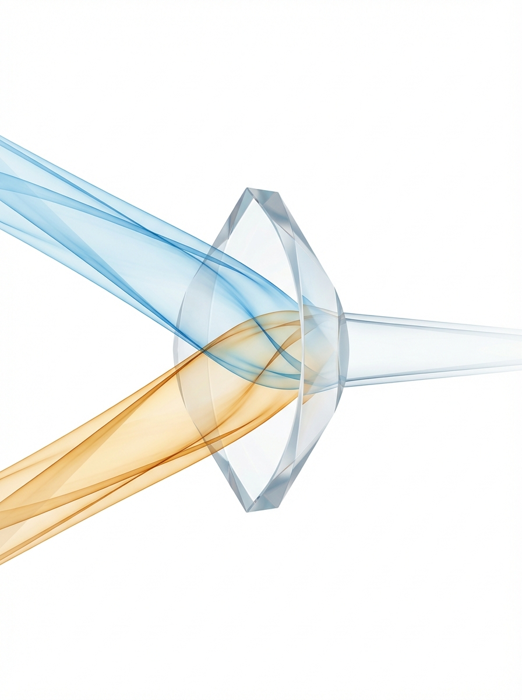
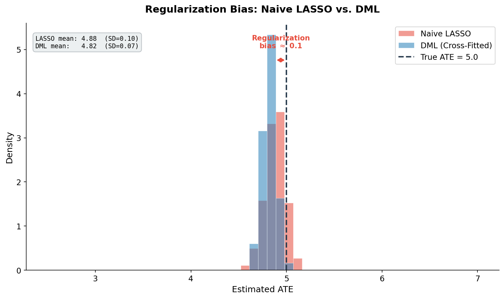
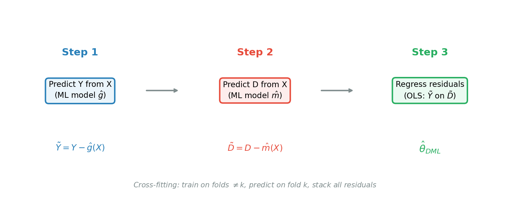
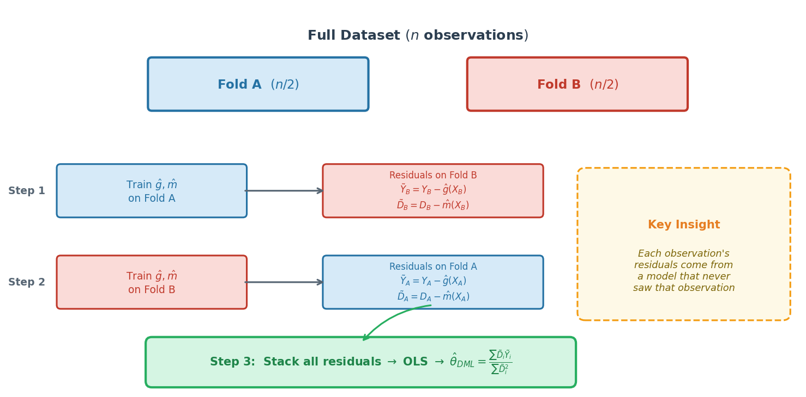
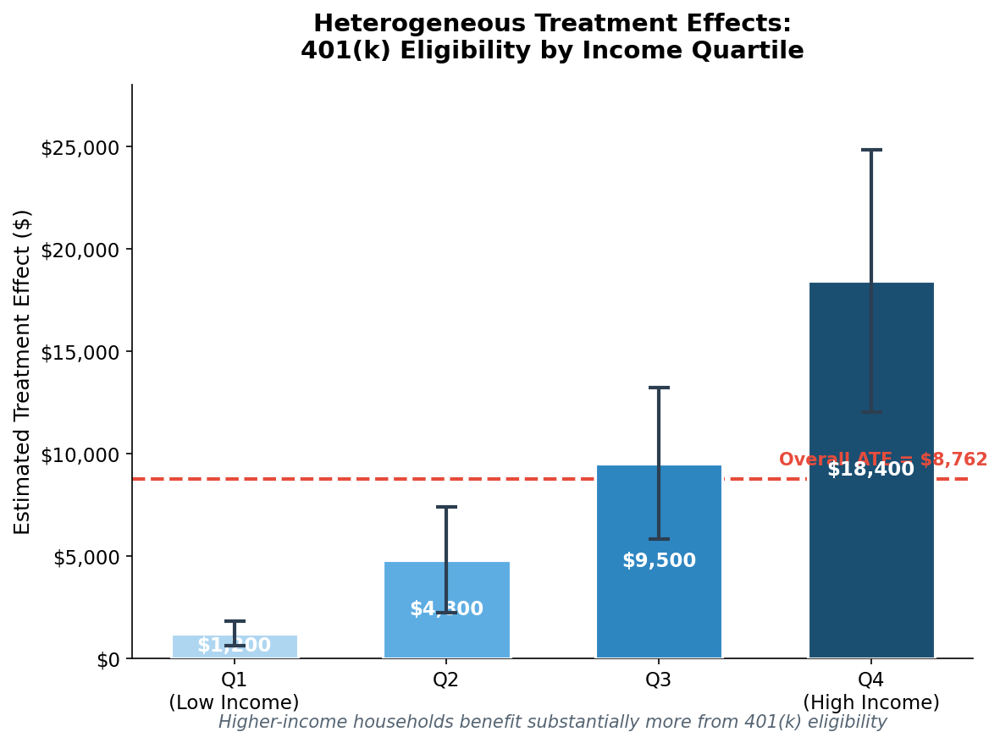

ECON 3916 • Data Science for Economists • Chapter 24
Dr. Richeng Piao
Department of Economics
Northeastern University

LO1 — UNDERSTAND
Why naive ML produces regularization bias and how Neyman orthogonality + cross-fitting resolve it
LO2 — APPLY
Estimate the ATE of 401(k) eligibility on wealth using the DoubleML Python package
LO3 — ANALYZE
Analyze CATE across subgroups — who benefits most from a policy intervention?
LO4 — EVALUATE
When is DML appropriate vs. A/B tests, OLS, or instrumental variables?
Ch 9: What did random assignment buy us in the Lalonde experiment?
Ch 15: If a model has low training error but high test error — which dominates, bias or variance?
Ch 19: How does a Random Forest reduce variance compared to a single decision tree?
At KDD 2025, DoorDash revealed that most promotional spending was wasted on customers who would have ordered anyway.
A/B tests could estimate the average effect. But DoorDash needed the individual-level causal response.
DML controlled for hundreds of behavioral confounders — order history, cuisine preferences, weather, competitors.
~50%
lower cost per
incremental order
8.03%
Qini score
(best of all methods)
You run LASSO with a treatment variable and 200 controls. As you increase the penalty λ, what happens to your treatment effect estimate θ̂?
The penalty shrinks all coefficients — including controls correlated with treatment. When those controls get shrunk, the confounding they absorbed leaks back into θ̂.
Key insight: Bias-variance tradeoff works differently for prediction vs. causation. Small prediction bias is OK; any causal bias corrupts the treatment effect.

Naive LASSO: ~$4.12 (TRUE = $5.00)
Biased downward by regularization
DML: ~$5.02 (TRUE = $5.00)
Centered on truth via orthogonality
Simulated: n=5,000, p=100, TRUE ATE=5.0

Intuition: Strip the confounding "tune" from both Y and D using ML. Whatever correlation remains between the residuals is the causal effect.

Same logic as CV (Ch 15)
Train on K-1 folds, predict on held-out fold
Different purpose
CV measures prediction error; cross-fitting measures a causal parameter
In DML with cross-fitting using K=5 folds, how many observations are used to TRAIN each nuisance model?
For each fold, we train on 80% and predict on the held-out 20%. Then we rotate.
Same splitting, different objective: In CV, we measure prediction error. In cross-fitting, we compute causal residuals.
Data: 9,915 households (SIPP 1991). Treatment: employer offers 401(k). Outcome: net financial assets.
dml_data = DoubleMLData(
data_401k,
y_col='net_tfa',
d_cols='e401',
x_cols=['age','inc','fsize',
'educ','marr','twoearn',
'pira','hown']
)
ml_l = RandomForestRegressor(
n_estimators=500, max_depth=7)
ml_m = RandomForestRegressor(
n_estimators=500, max_depth=7)
dml_plr = DoubleMLPLR(
dml_data, ml_l, ml_m, n_folds=5)
dml_plr.fit()~$19,000
Naive OLS (with selection bias)
~$8,762
DML estimate (bias removed)
~$10,200
Selection bias stripped by DML
The ATE of $8,762 is an average. But does every household benefit equally?
Conditional Average Treatment Effect
τ(x) = E[Yi(1) − Yi(0) | Xi = x]
The treatment effect for a person with these specific characteristics. The mean can be a poor summary of a heterogeneous population (Ch 4).

15x difference between Q1 and Q4
Given that 401(k) eligibility has a 15x larger wealth effect for Q4 ($18,400) vs. Q1 ($1,200):
Is a universal 401(k) mandate good policy?
FOR the mandate
Any positive effect > no effect. Universal programs are simpler to administer.
AGAINST the mandate
Progressive matching, auto-enrollment, and Saver's Credit may serve Q1 better.
CATE transforms a binary "does the policy work?" into "for whom does it work?"
DOORDASH
Which customers respond to promotions?
AMAZON
Which product categories are price-sensitive?
UBER
Where do driver bonuses actually increase supply?
In every case, the ATE told an incomplete story. The distribution of effects determined optimal action.
Same data, three chapters, increasingly sophisticated analysis
| Chapter | Method | Estimate | Key Insight |
|---|---|---|---|
| Ch 8 | Two-sample t-test | $1,794 | Statistical significance |
| Ch 9 | Permutation + Bootstrap | $1,794 (ATE) | Randomization makes it causal |
| Ch 24 | DML | ~$1,600-$2,100 | Recovers benchmark from observational data |
The causal inference toolkit has come full circle.
You have observational data with 200 measured confounders, but you suspect an important unmeasured confounder (e.g., "motivation"). Which approach is most appropriate?
DML requires conditional ignorability — ALL confounders must be observed. If there's an unmeasured confounder, DML inherits the same bias.
Rule of thumb: If you CAN randomize → A/B test. If all confounders are observed → DML. If unmeasured confounding → need an instrument or natural experiment.
When should you use DML versus just running an A/B test?
Give a specific scenario where each approach wins.
A/B TEST WINS
Cheap, fast, ethical to randomize (website UX, ad copy, email subject lines)
DML WINS
Can't randomize (education, historical policy, ethical constraints)
1. Naive ML fails for causation — regularization bias is first-order and does not vanish with more data.
2. DML = FWL + ML — partial out confounders from both Y and D, then regress residuals.
3. Cross-fitting = CV for causation — same K-fold splitting, different objective.
4. CATE reveals what ATE hides — 401(k) effect ranges from $1,200 (Q1) to $18,400 (Q4).
5. DML requires conditional ignorability — if unmeasured confounders exist, you need an instrument.
Write your response (paper or device):
1. List the 3 steps of DML and explain in one sentence why cross-fitting is necessary.
2. One thing I'm still confused about from today's lecture.
Next: Ch 25 — AI Literacy & Generative Tools for Economists | Lab: lab_24_double_ml.ipynb